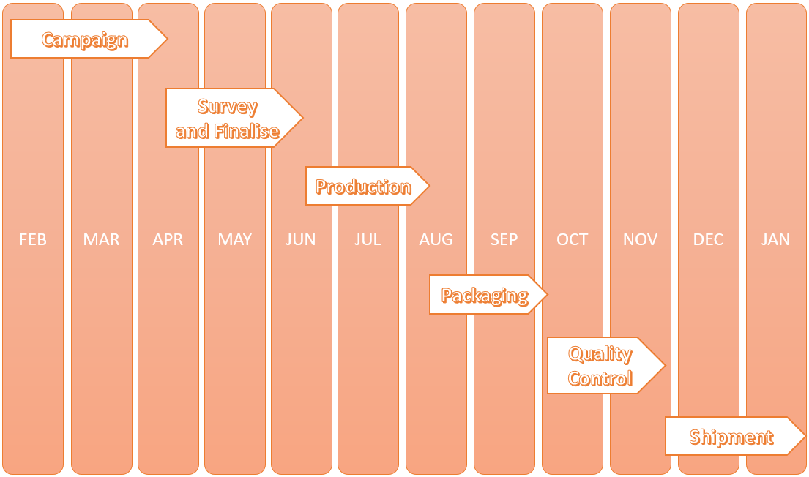

Crowdfunding Campaign
Cronoxo Smart Watch
Watch for the elderly
$239,948 AUD by 1,038 backers
Need To reach 500,000 AUD by 21st Jan 2022
Select a perk:
What we do
Cronoxo is derived from the word 'Cronos' in greek which is 'time' in english. Our brand revolves around catering watches for the elderly
VISION: Help seniors get by everyday with ease while using our watches
We aim to create watches for the elderly using the latest technology available while keeping the design old fashined to cater the elderly
What are we trying to solve?
Watch Functions

Specifications
Timeline
After the watch has gained enough contributions through Crowdfunding. The next phase will be to Survey and finalise the amount recieved and allocate them to our planned buget.This also includes choosing the factory locations, raw materials and man power resources. The next step would be to start production of the watches which would go till mid August. After productions would be packaging and then quality control of our watches. The quality control will be done by a well establised 3rd party Swiss checker. Finally, our watches will be set out to ur doorstep for you to wear.
